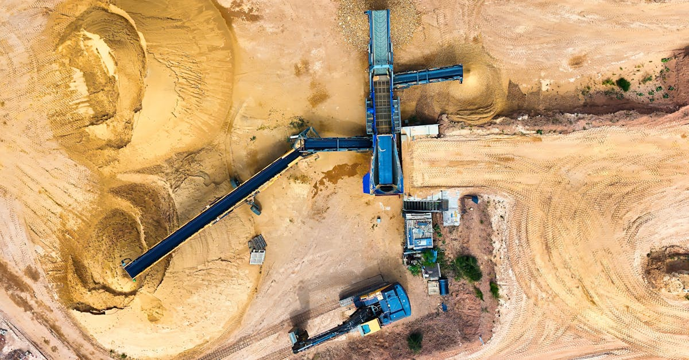

Le paysage des fusions et acquisitions en Australie se redresse-t-il ?
Le monde des affaires australien, longtemps marqué par une activité de fusions et acquisitions (M&A) plus mesurée que ses homologues asiatiques et américains, montre enfin des signes encourageants de reprise. C'est du moins ce que laisse entrevoir Peter Freund, responsable local des fusions et acquisitions chez Goldman Sachs, une institution financière dont l'analyse pèse lourd dans les décisions d'investissement mondiales. Dans un contexte économique global encore empreint d'incertitudes, cette lueur d'espoir en provenance du continent océanien mérite une attention particulière. Après une période de latence, où les transactions se faisaient rares et les grandes opérations attendues se faisaient désirer, un frémissement se fait sentir. Freund parle d'une « reprise précoce », un terme qui, s'il invite à la prudence, suggère une dynamique nouvelle. Cette reprise, si elle se confirme, pourrait avoir des répercussions significatives sur les marchés, y compris ceux des matières premières et des métaux précieux, domaines où l'Australie joue un rôle prépondérant. L'importance de ces signaux ne doit pas être sous-estimée. Les M&A sont souvent considérés comme un baromètre de la confiance des entreprises et de la santé économique générale. Une augmentation des transactions indique que les directions générales se sentent suffisamment confiantes pour investir dans la croissance, que ce soit par acquisition de concurrents, de technologies innovantes ou de nouveaux marchés. Pour les investisseurs, cela se traduit par de nouvelles opportunités, mais aussi par une volatilité accrue potentielle. L'anticipation de ces mouvements stratégiques est cruciale, et c'est précisément là que des outils d'analyse avancée, comme ceux basés sur l'intelligence artificielle, peuvent offrir un avantage distinctif. L'IA, capable de traiter des volumes massifs de données et d'identifier des corrélations subtiles, pourrait aider à déceler les prémices de ces opérations bien avant qu'elles ne deviennent publiques, offrant ainsi un avantage compétitif aux traders avisés.
👉 À lire : Marchés de prédiction bloqués au Brésil : Quel impact pour l'or et l'IA ?

Les facteurs derrière le ralentissement et les prémices du rebond
Plusieurs éléments ont contribué au ralentissement observé dans le paysage des fusions et acquisitions australien ces dernières années. L'incertitude macroéconomique mondiale, marquée par les tensions géopolitiques, l'inflation persistante et la hausse des taux d'intérêt, a naturellement freiné l'appétit pour le risque des entreprises. Les coûts de financement plus élevés rendent les acquisitions plus coûteuses et plus complexes à structurer. De plus, les réglementations plus strictes, notamment en matière de concurrence et d'investissement étranger, ont également pu jouer un rôle dissuasif dans certains secteurs. L'Australie, fortement dépendante des exportations de matières premières, a également été sensible aux fluctuations des prix mondiaux, créant un environnement d'investissement plus volatil. Cependant, les conditions commencent à évoluer. La baisse de l'inflation dans certains pays, la stabilisation relative des taux d'intérêt et une reprise économique plus générale dans la région Asie-Pacifique créent un terrain plus favorable. Peter Freund souligne que les entreprises disposent toujours de bilans solides, alimentés par des années de rentabilité, notamment dans le secteur des ressources naturelles. Cette liquidité disponible représente un potentiel de financement important pour les opérations de M&A. De plus, la nécessité pour de nombreuses entreprises de se restructurer, de se moderniser face aux défis technologiques et environnementaux, ou encore de consolider leur position sur des marchés en mutation, crée une demande sous-jacente pour les transactions. L'IA, dans ce contexte, peut analyser ces multiples facteurs – conditions macroéconomiques, santé financière des entreprises, tendances sectorielles – pour identifier les entreprises les plus susceptibles d'être acquéreuses ou cibles, ou celles dont les stratégies pourraient bénéficier d'une consolidation. Elle peut évaluer le potentiel de synergies et les risques associés, fournissant ainsi une vision plus claire des opportunités émergentes.
👉 À lire : Intel: Ventes explosives, appels obligataires et impact sur l'or
L'importance stratégique de l'Australie dans les M&A mondiaux
L'Australie n'est pas une économie comme les autres sur la scène mondiale des fusions et acquisitions. Sa richesse en ressources naturelles, notamment en minerais essentiels à la transition énergétique (lithium, cobalt, cuivre) et en métaux précieux comme l'or, en fait une cible stratégique pour les entreprises internationales cherchant à sécuriser leurs chaînes d'approvisionnement. Les grandes puissances économiques et les acteurs industriels majeurs reconnaissent l'importance de contrôler ces actifs critiques. Par conséquent, même lorsque le marché global des M&A est en berne, l'Australie conserve un attrait particulier. Le secteur minier, en particulier, est un moteur traditionnel des transactions dans le pays. Les entreprises cherchant à acquérir des concessions prometteuses, à développer de nouvelles mines ou à consolider leur présence sur le marché sont souvent à l'origine de deals majeurs. Les signes de reprise observés par Goldman Sachs pourraient donc se traduire par une intensification des activités dans ce secteur clé. Au-delà des ressources, l'Australie bénéficie également d'un secteur technologique en plein essor, notamment dans les domaines de la fintech, de l'agritech et des logiciels. Les entreprises étrangères cherchent à acquérir ces innovations pour rester compétitives. La reprise des M&A pourrait donc signifier une vague d'acquisitions de startups et d'entreprises technologiques australiennes prometteuses. Pour les investisseurs dans les métaux précieux, suivre de près ces mouvements de M&A est essentiel. Une consolidation dans le secteur minier, par exemple, peut entraîner une réduction de l'offre à moyen terme, soutenant ainsi les prix de l'or et d'autres métaux. De même, l'acquisition de technologies innovantes dans le secteur de l'extraction pourrait améliorer l'efficacité et réduire les coûts, impactant la rentabilité des producteurs et, par conséquent, la dynamique du marché. L'IA peut aider à modéliser ces impacts potentiels, en corrélant les annonces de M&A avec les mouvements des prix des matières premières.

Goldman Sachs : un indicateur clé pour les marchés financiers
Lorsque Goldman Sachs, l'une des banques d'investissement les plus influentes au monde, exprime une opinion sur l'état des marchés, le monde financier tend l'oreille. La déclaration de Peter Freund, chef des M&A pour l'Australie, n'est donc pas anodine. Elle reflète une analyse approfondie basée sur les flux de transactions, les discussions avec les entreprises et les perspectives économiques. La confiance de Goldman Sachs dans une reprise précoce des M&A australiennes suggère que la banque voit des opportunités concrètes et une amélioration du sentiment des investisseurs. Cela peut agir comme un catalyseur, encourageant d'autres acteurs du marché à reconsidérer leurs stratégies d'investissement et à explorer de nouvelles transactions. L'influence de Goldman Sachs ne se limite pas à ses propres activités ; ses analyses et ses recommandations orientent souvent les décisions d'autres institutions financières, de fonds d'investissement et d'entreprises. Par conséquent, les signes de reprise qu'elle observe peuvent signaler un mouvement plus large dans l'économie australienne et potentiellement dans la région Asie-Pacifique. Pour les investisseurs intéressés par les métaux précieux, cette reprise des M&A, particulièrement dans le secteur des ressources, est une donnée à intégrer. Une activité M&A accrue peut indiquer une confiance renouvelée dans les perspectives économiques, ce qui est souvent favorable à l'or en tant que valeur refuge, mais aussi une consolidation qui peut affecter l'offre et la demande de métaux industriels et précieux. L'IA, en analysant les rapports et les déclarations d'acteurs majeurs comme Goldman Sachs, peut aider à quantifier l'impact potentiel de ces signaux sur les marchés, en croisant ces informations avec des données historiques de performance et des indicateurs de sentiment de marché. Elle peut ainsi fournir une évaluation plus objective des risques et des opportunités, aidant à naviguer dans un environnement complexe.
L'or et les métaux précieux : des bénéficiaires potentiels de cette dynamique
La reprise attendue des fusions et acquisitions en Australie pourrait avoir des retombées directes et indirectes sur le marché de l'or et des autres métaux précieux. L'Australie est le deuxième producteur mondial d'or et un acteur majeur dans l'extraction d'autres métaux comme le cuivre, le nickel, le zinc et le lithium. Une intensification des activités de M&A dans le secteur minier pourrait conduire à plusieurs scénarios. Premièrement, la consolidation. Les grandes entreprises pourraient racheter des concurrents plus petits pour accroître leur taille, leur efficacité opérationnelle et leur pouvoir de marché. Cette consolidation peut entraîner une rationalisation de la production, potentiellement réduisant l'offre globale à moyen terme, ce qui est généralement un facteur haussier pour les prix. Deuxièmement, le développement de nouveaux projets. Les investissements accrus, facilités par la confiance retrouvée, pourraient stimuler l'exploration et le développement de nouvelles mines, y compris pour l'or. Si ces nouveaux projets sont économiquement viables et bien gérés, ils pourraient augmenter l'offre à plus long terme, mais leur mise en chantier nécessite des capitaux importants et une vision stratégique claire. Troisièmement, l'impact sur les métaux industriels. La reprise des M&A n'est pas limitée au secteur aurifère. Les transactions dans les métaux comme le cuivre et le nickel, essentiels à la transition énergétique, sont également susceptibles d'augmenter. Une demande soutenue pour ces métaux, couplée à une consolidation de l'offre, pourrait influencer les flux d'investissement, détournant potentiellement certains capitaux de l'or, ou au contraire, renforçant l'attrait des métaux précieux comme valeur refuge en cas de tensions sur les marchés des matières premières. L'intelligence artificielle, grâce à sa capacité à analyser des corrélations complexes entre les annonces de M&A, les données de production minière, les flux d'investissement et les mouvements de prix, peut aider les traders d'or et de métaux précieux à anticiper ces dynamiques. Elle peut identifier les entreprises les plus susceptibles de bénéficier de cette vague de transactions ou celles dont les actifs pourraient devenir des cibles attrayantes.

Comment l'intelligence artificielle anticipe les mouvements de marché
Dans un environnement financier de plus en plus complexe et rapide, l'intelligence artificielle (IA) devient un outil indispensable pour les investisseurs cherchant à naviguer avec succès. L'actualité de Goldman Sachs sur les M&A en Australie n'est qu'un exemple parmi d'autres des signaux que l'IA peut décrypter et exploiter. Les algorithmes d'IA peuvent analyser en temps réel des quantités astronomiques de données : actualités financières mondiales, rapports d'analystes, données macroéconomiques, flux de transactions, sentiment sur les réseaux sociaux, données satellitaires sur l'activité minière, et bien plus encore. En traitant ces informations, l'IA peut identifier des tendances émergentes, des anomalies et des opportunités qui échapperaient souvent à l'analyse humaine traditionnelle. Concernant les M&A, l'IA peut :
- Identifier les entreprises sous-évaluées : En analysant les bilans, les flux de trésorerie et les valorisations, l'IA peut repérer des cibles potentielles d'acquisition ou des entreprises dont le cours de bourse pourrait réagir positivement à une annonce de fusion.
- Prédire les mouvements de prix : En corrélant les annonces de M&A avec les performances historiques des actions et des matières premières concernées, l'IA peut aider à anticiper les réactions du marché. Par exemple, une consolidation dans le secteur de l'or pourrait être prédite comme un facteur haussier potentiel pour le métal jaune.
- Évaluer les risques : L'IA peut analyser les risques associés à une transaction potentielle, qu'ils soient financiers, réglementaires ou opérationnels, en se basant sur des données historiques et des modèles prédictifs.
- Optimiser les stratégies de trading : Pour les traders d'or et de métaux précieux, l'IA peut suggérer des points d'entrée et de sortie optimaux, gérer le dimensionnement des positions et diversifier les portefeuilles en fonction des conditions de marché anticipées.
L'agent IA de GoldTrade AI, par exemple, est conçu pour intégrer ce type d'analyses complexes, surveillant en permanence les marchés et exécutant des transactions basées sur des algorithmes sophistiqués, 24h/24. Il peut ainsi réagir rapidement aux nouvelles informations, comme les déclarations de Goldman Sachs, et adapter sa stratégie pour capitaliser sur les opportunités émergentes, y compris celles découlant d'une reprise des M&A dans des régions clés comme l'Australie.
Impact sur la stratégie d'investissement : prudence et opportunisme
La perspective d'une reprise des fusions et acquisitions en Australie, annoncée par Goldman Sachs, appelle à une stratégie d'investissement nuancée, combinant prudence et opportunisme. D'une part, il est essentiel de rester vigilant face aux risques inhérents à tout marché en transition. La volatilité peut augmenter à mesure que les transactions se concrétisent et que les valorisations sont ajustées. Les conditions macroéconomiques mondiales, bien qu'en amélioration, restent sujettes à des chocs potentiels. Les investisseurs doivent donc s'assurer que leurs portefeuilles sont suffisamment diversifiés et résilients. La diversification, en particulier, est cruciale. Pour ceux qui investissent dans l'or et les métaux précieux, cela signifie ne pas se concentrer uniquement sur un seul actif, mais considérer un panier diversifié incluant potentiellement des actions minières, des contrats à terme, et des ETF adossés à ces métaux. D'autre part, cette reprise offre des opportunités significatives. Les entreprises qui réussissent à naviguer dans ce nouvel environnement, que ce soit en tant qu'acquéreurs, cibles ou simplement en tant qu'acteurs bien positionnés dans des secteurs clés comme les ressources naturelles, pourraient générer des rendements attrayants. L'opportunisme réside dans la capacité à identifier ces acteurs et ces tendances avant qu'elles ne soient pleinement intégrées par le marché. C'est là que l'analyse prédictive, alimentée par l'IA, prend tout son sens. En analysant les flux de capitaux, les tendances sectorielles et les signaux de confiance comme ceux émanant de Goldman Sachs, les stratégies d'investissement peuvent être affinées pour cibler les opportunités les plus prometteuses. Pour les métaux précieux, cela peut signifier ajuster les positions en fonction des anticipations de consolidation minière, des variations de la demande industrielle, ou de l'évolution du sentiment général des investisseurs envers les actifs plus risqués ou plus sûrs. Une approche basée sur l'IA peut aider à identifier le bon équilibre entre la recherche de rendement et la gestion des risques.
Le rôle de l'or comme valeur refuge dans un contexte de M&A
Dans le tourbillon des fusions et acquisitions, où les changements stratégiques et les flux de capitaux peuvent perturber les marchés, l'or conserve son statut de valeur refuge par excellence. Alors que les entreprises australiennes et internationales s'engagent dans des opérations de consolidation ou d'expansion, l'incertitude inhérente à ces processus peut susciter des inquiétudes chez les investisseurs. Les fluctuations potentielles des marchés boursiers, les ajustements réglementaires et les risques géopolitiques liés à l'accès aux ressources critiques peuvent pousser les investisseurs à chercher refuge dans des actifs considérés comme plus stables et moins corrélés aux cycles économiques traditionnels. L'or, avec son histoire millénaire de préservation de la valeur, répond parfaitement à ce besoin. Même si la reprise des M&A est un signe de confiance économique, elle peut aussi s'accompagner de périodes de turbulence. Les annonces de transactions majeures peuvent créer de la volatilité sur les marchés d'actions, tandis que les tensions géopolitiques sous-jacentes à la sécurisation des chaînes d'approvisionnement en métaux essentiels peuvent persister. Dans ce contexte, l'or agit comme un stabilisateur de portefeuille. Sa performance est souvent inversement corrélée aux marchés actions lors des périodes de stress, offrant ainsi une protection contre les pertes. De plus, l'augmentation de l'activité M&A dans le secteur des ressources naturelles peut paradoxalement renforcer l'attrait de l'or. Si la consolidation conduit à une réduction de la production ou à des incertitudes sur l'offre future de certains métaux industriels, cela peut accentuer la perception de l'or comme un actif plus sûr et plus prévisible. Les investisseurs peuvent alors se tourner vers l'or pour diversifier leurs risques. L'intelligence artificielle peut aider à modéliser cette dynamique complexe, en quantifiant la corrélation entre l'activité M&A, les prix des métaux industriels et la demande pour l'or. Elle peut ainsi aider à ajuster les stratégies d'investissement pour mieux tirer parti du rôle protecteur de l'or, même dans un contexte de reprise des transactions.
Conclusion : Naviguer vers l'avenir avec l'IA et les métaux précieux
La perspective d'un rebond des fusions et acquisitions en Australie, soulignée par Goldman Sachs, marque une étape potentiellement significative pour l'économie de la région et les marchés mondiaux. Ce mouvement, s'il se confirme, pourrait stimuler l'activité économique, transformer des secteurs clés comme celui des ressources naturelles, et ouvrir de nouvelles voies d'investissement. Pour les acteurs du marché des métaux précieux, cette actualité est riche d'enseignements. Elle souligne l'importance de surveiller les dynamiques de consolidation, les flux de capitaux internationaux et les stratégies des grandes institutions financières. L'Australie, par sa richesse en ressources, reste un pivot central dans ces évolutions. Dans ce paysage en mutation, où la vitesse de l'information et la complexité des interactions sont croissantes, l'intelligence artificielle se révèle être un allié précieux. Des outils comme l'agent IA de GoldTrade AI offrent la capacité d'analyser ces signaux complexes, d'anticiper les mouvements de marché et d'exécuter des stratégies de trading optimisées, 24h/24. Que ce soit pour capitaliser sur les opportunités créées par les M&A dans le secteur minier, ou pour se protéger contre la volatilité inhérente à ces processus grâce à la stabilité de l'or, l'IA apporte une dimension analytique et opérationnelle inégalée. L'avenir du trading, particulièrement dans les marchés volatils des métaux précieux, sera sans doute façonné par la synergie entre une compréhension approfondie des fondamentaux économiques, comme la reprise des M&A en Australie, et la puissance prédictive et exécutive de l'intelligence artificielle. Il est temps d'adopter ces technologies pour naviguer avec succès dans les marchés de demain.